01
Independent fashion professional · Design / Product / Market
VANSHIKAJAIN
A personal portfolio of the ideas, products, partnerships and systems I have shaped across fashion.
0103
Scroll to explore ↓
01 / About
I bring a point of view to fashion — connecting creative instinct with product thinking and commercial understanding.
I’m a fashion designer and multidisciplinary fashion professional working across design, product development, merchandising, brand communication and styling. I enjoy moving between the creative and commercial sides of a product — shaping the idea, building the product, understanding its customer and bringing it to market.
Fashion Merchandising
Product Development
Brand Strategy
Fashion Marketing
Personal Styling
Consumer Insights
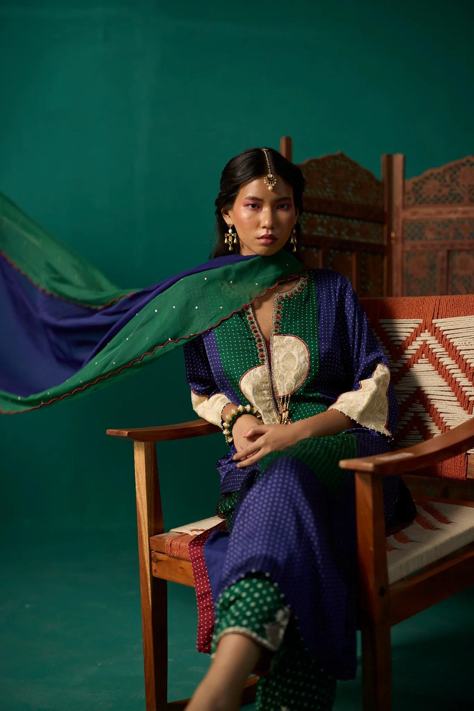
02 / Selected Work — Design & Product Development
Festive 2026
Bandhani × Banarasi brocade × zardozi. A Saawan-led festive collection developed end to end.
Festive 2025
Jewel tones, brocade and corset-led silhouettes, and the brand's first experiments with sleeveless cuts.
Spring / Summer 2025
Summer silk, hand appliqué and a softer contemporary language built from concept to market.
Festive / Wedding 2024
Tissue, Chiniya silk, Chanderi and brocade shaped into a festive wardrobe rooted in adornment.
Spring / Summer 2024
A considered small-batch launch designed with XXS–8XL inclusivity in handwoven Chiniya silk.
Summer collection
Wild flowers and nature's scenic calm in sweet pastels, silk drapes and delicate hand embroidery. Workmanship over trends.
Collections designed and developed during my time at NEITRI.
03 / Fashion Marketing, Collaborations & PR
People wearing the story.
How fashion marketing & PR work.
I managed fashion marketing and influencer and celebrity partnerships end-to-end. This is how a collection moves from product to visibility.
- 01
Find the right faces
Identifying relevant influencer and celebrity profiles for each collection.
- 02
Pitch & PR outreach
Leading PR outreach and pitching the brand and its collections.
- 03
Negotiate & close
Negotiating commercials and closing barter, paid and gifting deals.
- 04
Product & dispatch
Coordinating product selection, dispatches and styling alignment.
- 05
Content & launch
Planning campaign concepts, content calendars and deliverables, then launch integration across Instagram grids, carousels, Stories and Reels.
- 06
Visibility to sales
Making sure visibility supports the commercial life of each collection.
A Personal Design Credit / Brand Collaboration
A design I created, worn by Masoom Minawala.
I designed the outfit worn by Masoom Minawala, which was also featured during a Business of Fashion conversation. For me, this is a meaningful example of taking a design from development to a high-visibility cultural and industry moment. The work was created during my time at NEITRI; the design contribution is mine.
Collaborations in motion
02
Aarjavee Shah
03
Gopalika Virmani
04
Mehak Bakshi
Selected collaborationsPart of 30+ influencer and celebrity collaborations across launches, placements and brand campaigns.
- Ridhi Khosla
- Isha Multani
- Kareena Kapoor
- Krishna Kapoor
- Riddhima Kapoor
- Roshni Bhatia
- Karishma Kapoor
- Esha Rao
- Ira Dubey
- Prerna Goel
- Maia Sethna
- Natasha Luthra
- Dipti Dhillon
- Shivani Girdhar
- Anissa Jain
04 / My Work — Merchandising & Market Development
Making the creative commercially meaningful.
I manage the commercial life of a collection after design — reading performance, translating customer response into regional assortment decisions, allocating stock, building visibility and moving inventory where it can perform best.
25–30+MBO accounts opened / developed
40–60monthly orders managed across cycles
30+karigars & embroiderers coordinated
10–15+vendor network across sourcing & production
My merchandising process
Sales data
I update my own performance sheet every 15 days and review monthly reports to track sell-through, trials, price response, customer interest and early bestsellers.
Regional demand
I read performance city by city and combine past sales with local customer behaviour — for example, balancing sleeve preferences and silhouette appetite differently across Hyderabad and Delhi.
Assortment
I translate those signals into store-wise mixes: which styles, colours, sleeve types and price points each rack needs, and I help determine how many units are needed for production.
Allocation
I allocate fresh collections across multi-designer boutiques and retail partners, coordinate tagging and dispatch, and make sure each store receives a commercially relevant edit instead of the same generic assortment.
Visibility
When a strong product lacks discovery, I connect merchandising with content — campaign imagery, social storytelling and influencer placement — then watch how customer response changes.
Replenishment
Strong first-15-day performance triggers early replenishment planning so bestsellers remain available while demand is active.
Stock rotation
Approximately every 45 days, I reassess slower inventory and move styles between cities to test market-product fit before treating a product as an underperformer.
My role
I use sales and customer signals to help shape what gets produced, where it is placed, how it is supported, when it is replenished and when stock should move to another market.
Selected retail network
Selected retail relationships and placements from a wider network of 50+ stores. I personally opened or developed 25–30+ of the MBO accounts; not every store shown was opened by me.
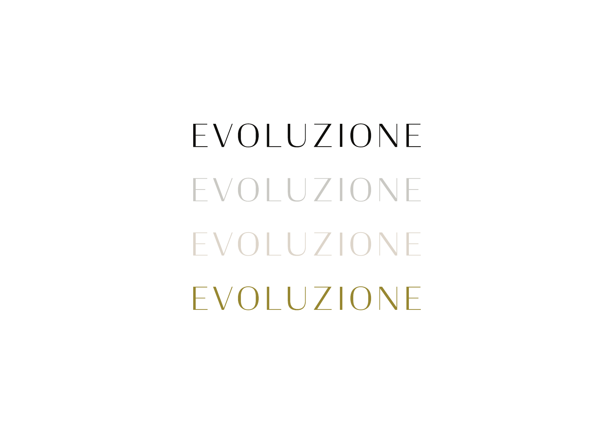
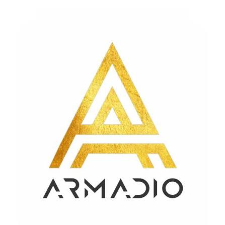
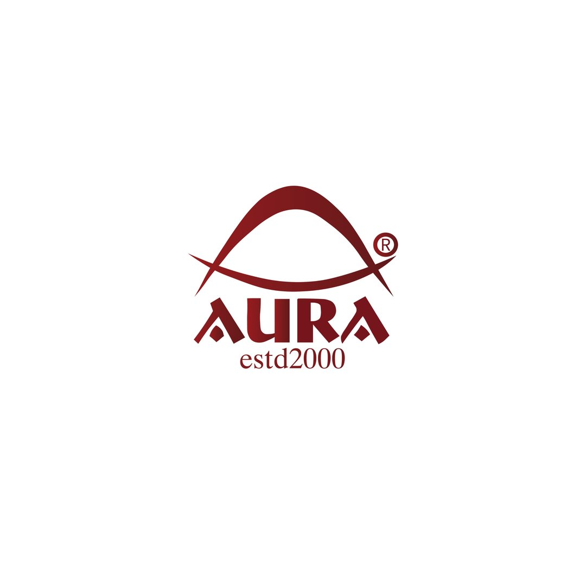
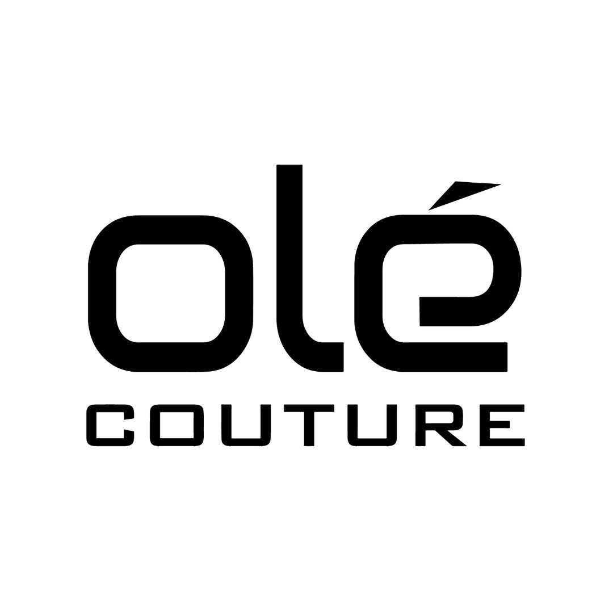
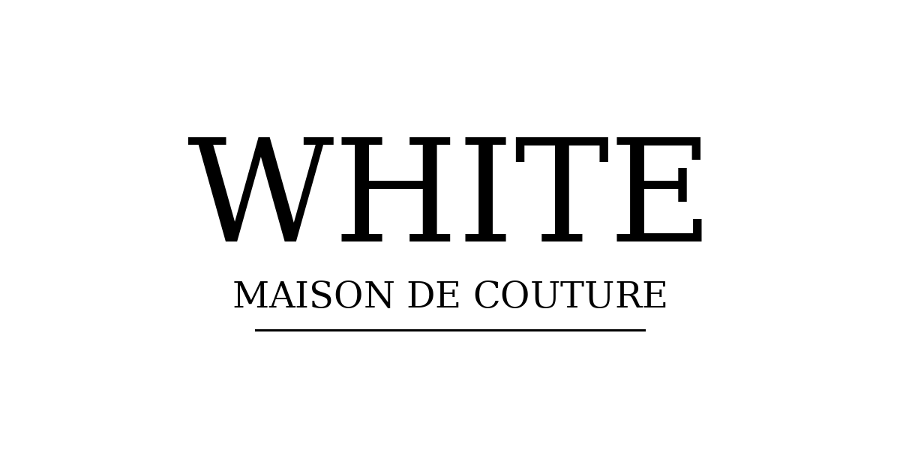
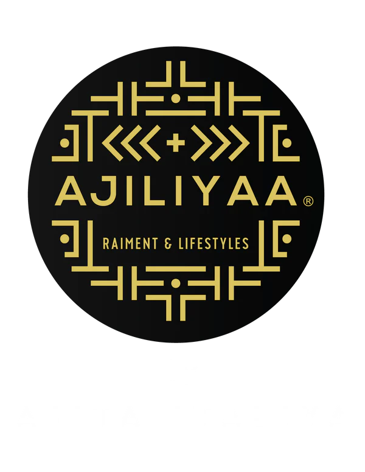
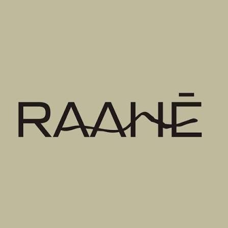
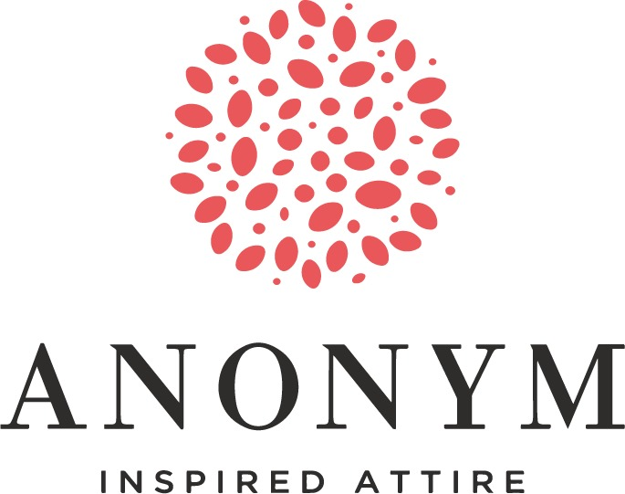
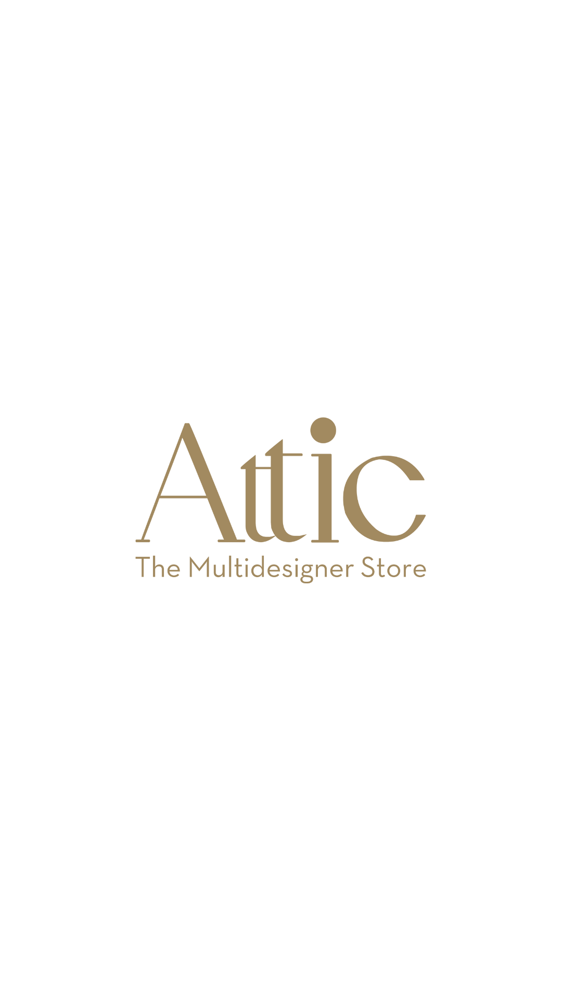
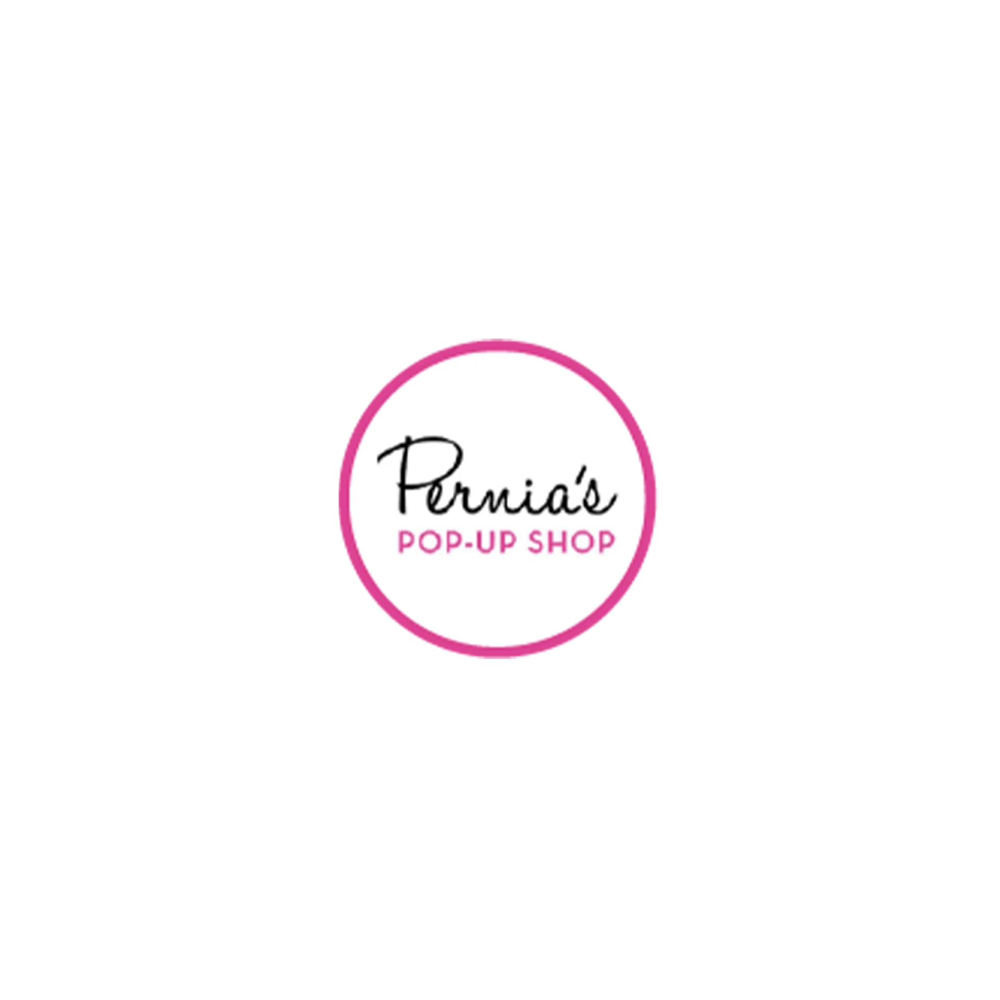
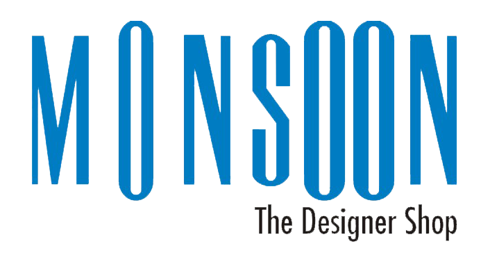
Exhibitions & trunk shows
Showing the work in person.
Selected exhibitions from a broader calendar of trunk shows and events. Dates and cities are shown only where confirmed.
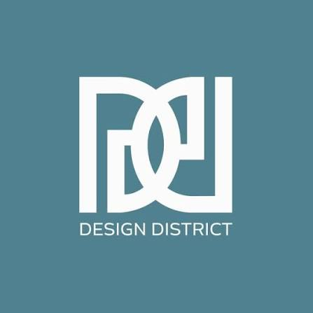
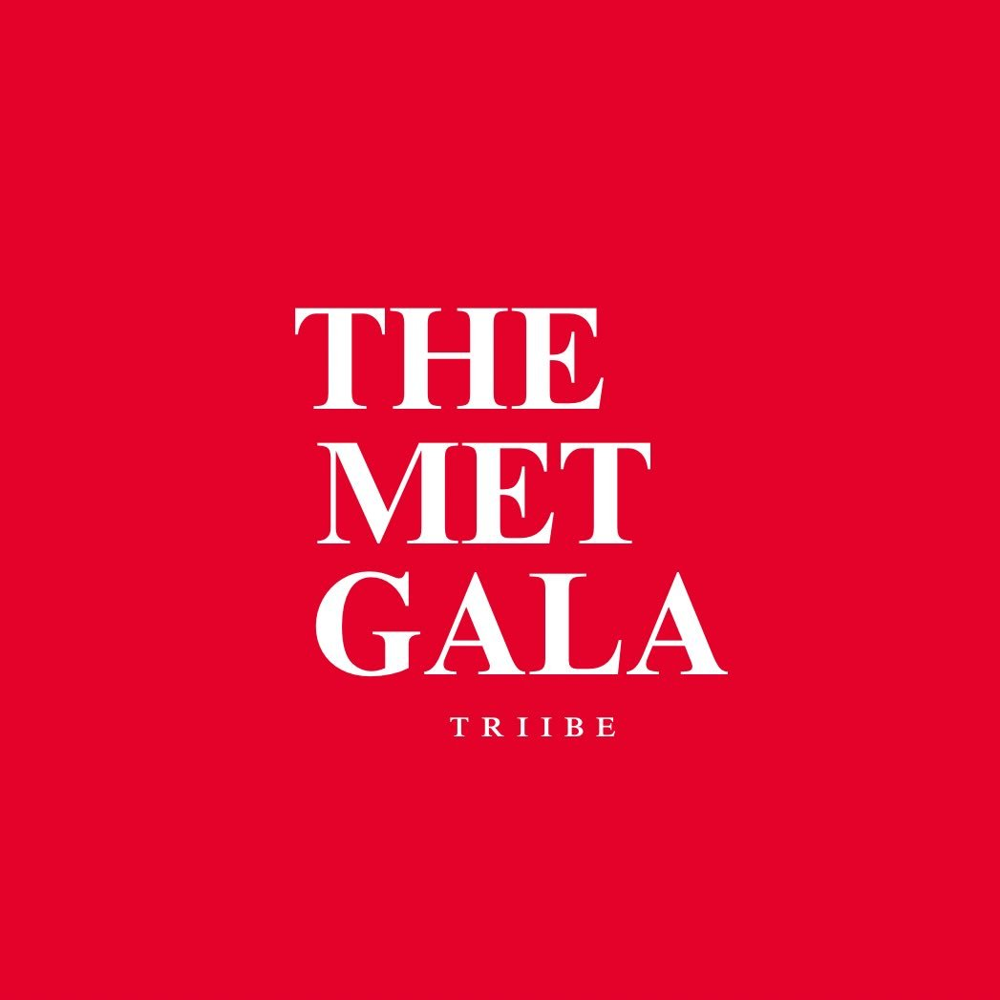
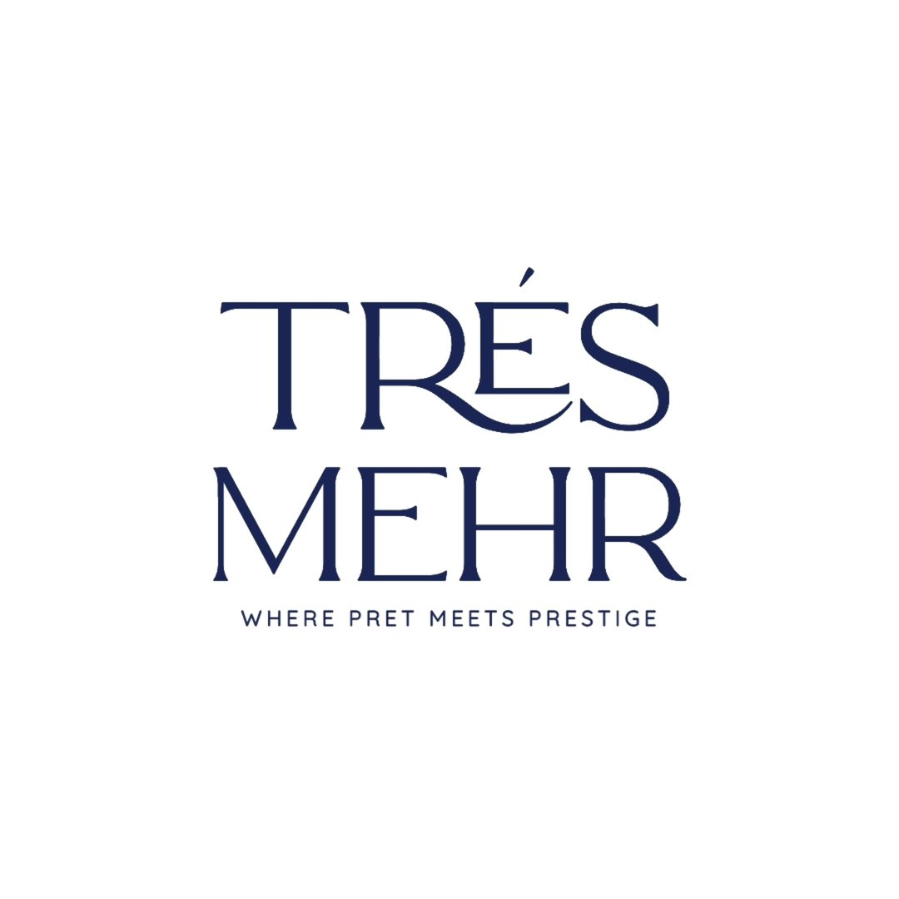
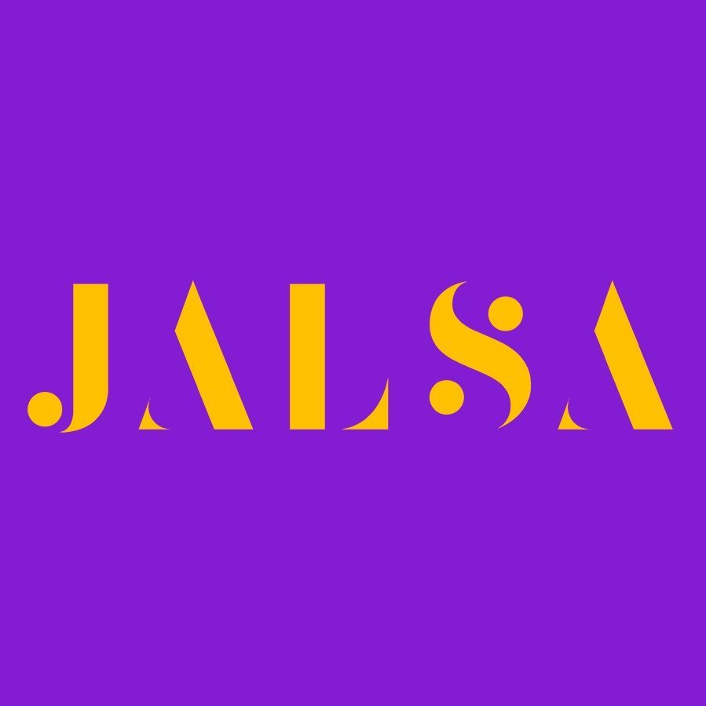
06 / Fashion Tech
Turning styling intuition into systems.
AI-assisted personalization and decision tools developed from real customer behaviour, returns, measurements and styling feedback at The Mad Dresser — and implemented in the business.
Body Type Relationship Matrix
Designed and implemented a structured decision framework using bust, waist and hip measurements to classify body shape, then connect that classification to a styling-compatibility matrix for more consistent garment recommendations.
- Built from real client behaviour, return reasons and the alternate styles customers ultimately kept.
- Used the gap between perceived body shape and measurement-derived classification as a styling insight.
- Converted subjective stylist judgement into a more scalable, data-backed recommendation framework.
- Supported more inclusive product positioning by mapping silhouettes against real customer body diversity.
Measurements → Body Type → Compatibility Matrix → Ranked Recommendations
Ease Type Calculator
Developed a fit-intelligence tool that connected customer body measurements, body type and preferred fit with garment ease, helping stylists translate qualitative fit language into more consistent selection.
- Expanded the fit vocabulary from fitted / relaxed / oversized to fitted / relaxed / loose / oversized.
- Connected the customer’s preferred fit with a recommended fit for their body type and a silhouette-suitability check.
- Bridged subjective styling interpretation with objective measurement-based decision-making.
Fitted+2"
Relaxed+4"
Loose+6"
Oversized+8"
Body measurements → Body type → Recommended fit → Preferred fit → Ease → Garment selection
Presented as implemented frameworks developed at The Mad Dresser. The original datasets and full algorithms are proprietary and are not reproduced here.
07 / Experience
NEITRI
Manager — Fashion Marketing & Strategy / Marketing, Merchandising & Consumer Insights / Styling Strategy
Design, merchandising, product development, sourcing, production, inventory, retail operations, marketing, influencer marketing, vendor communication and brand development.
The Mad Dresser
Senior Fashion Stylist
Promoted from Junior Fashion Stylist. Worked with the founders on the Body Type Relationship Matrix and Ease Type Calculator.
The Mad Dresser
Junior Fashion Stylist
Clovia
Merchandising / Design Assistant — Central Planning
B.Des Fashion Design — AAFT School of Fashion & Design, CGPA 9.3
Fashion Marketing & Merchandising — University of the Arts London / Udemy, 2021
A point of view,
made tangible.
Vanshika JainDesign · Product · Perspective© 2026